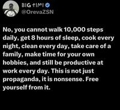
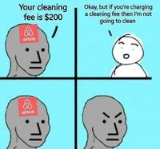

Ancient Slashdot reader ewhac writes: CERN, a longtime Open Source pioneer, has made several contributions over the years to KiCad ("KEE-kad"), an Open Source EDA (Electronic Design Automation) package widely used in the hobbyist and professional electronics communities. It's gotten so widely used that users can now submit their KiCad design files directly to several electronics fabricators (rather than the traditional step of converting the layouts to Gerber files). Over the years, CERN has also developed their own symbol and footprint libraries to support their own internal electronic designs. Last week, CERN released those KiCad component libraries, containing over 17,000 symbols, under the CERN Open Hardware License.
Read more of this story at Slashdot.
OpenAI CEO Sam Altman took the stand Tuesday in Elon Musk's trial against the company, testifying that Musk repeatedly sought control of OpenAI before leaving in 2018. Altman said he opposed putting AI "under the control of any one person," while Musk's lawyer used a pointed cross-examination to attack Altman's trustworthiness. An anonymous reader shares updates from the testimony via the New York Times: Before Elon Musk left OpenAI in a power struggle in 2018, he wanted to merge the nonprofit artificial intelligence lab with Tesla, his electric car company. Mr. Musk and other OpenAI co-founders met several times to discuss the merger. OpenAI's chief executive, Sam Altman, was even offered a seat on Tesla's board of directors, according to a court document. But folding OpenAI into Tesla would have eliminated the lab's nonprofit status, and that, Mr. Altman said on the witness stand on Tuesday, was something he wanted to avoid. [...] "I believed that A.I. should not be under the control of any one person," Mr. Altman said. [...] Mr. Altman testified about his feud with Mr. Musk. He said he had become worried that Mr. Musk, who provided the early investment money for OpenAI, wanted to take control of the lab. He described what he called a "particularly harrowing moment" when his OpenAI co-founders asked Mr. Musk what would happen to his control of a potential for-profit when he died. Mr. Altman said Mr. Musk had replied that the control would pass to his children. "I was not comfortable with that," Mr. Altman said. When Mr. Musk lost a power struggle for control of the lab, he left, forcing Mr. Altman to find another big financial backer in Microsoft.
But Mr. Altman ran into trouble in 2023 when OpenAI's board fired him because, as several of its members have testified in the trial, it didn't trust him. Steven Molo, Mr. Musk's lead lawyer, homed in on Mr. Altman's trustworthiness during an aggressive cross-examination. "Are you completely trustworthy?" Mr. Molo asked. "I believe so," Mr. Altman answered. After questioning Mr. Altman's trustworthiness for nearly 20 minutes, Mr. Molo turned to Mr. Altman's relationship with Mr. Musk. Mr. Altman said that after he met Mr. Musk in the mid-2010s, Mr. Musk had occasionally expressed concern about the dangers of A.I. But Mr. Musk spent far more time saying he was worried that companies like Google would get ahead in A.I. development, Mr. Altman said. (Mr. Musk testified in the trial that he had wanted to create OpenAI to prevent Google from controlling the technology.)
Mr. Altman, the lawyer intimated, took advantage of Mr. Musk's concerns and was never sincere about his own A.I. fears. "Are you a person who just tells people things they want to hear whether those things are true or not?" Mr. Molo asked. The lawyer also questioned whether Mr. Atman, who became a billionaire through years of tech investments, was self-dealing through OpenAI. Mr. Molo showed a list of Mr. Altman's personal investments across a number of companies that stand to benefit from their association with OpenAI. They included Helion Energy, a start-up that has deals with Microsoft and OpenAI, and Cerebras, a chip maker in business with OpenAI. Mr. Molo asked if Mr. Altman, who is on OpenAI's board as well as its chief executive, would ever fire himself. "I have no plans to do that," Mr. Altman said.
OpenAI's odd journey from nonprofit lab to what it is today -- a well-funded, for-profit company that is still connected to a nonprofit called the OpenAI Foundation with an endowment that could be worth more than $130 billion -- provided grist for Mr. Molo's questions about Mr. Altman's motivations. He implied that Mr. Altman could have continued to build OpenAI as a pure nonprofit. But the only way to build such a valuable charity was to raise billions through a for-profit venture, Mr. Altman responded. Still, the giant sums being raised appeared to upset Mr. Musk. In late 2022, according to court documents, Mr. Musk sent a text to Mr. Altman complaining that Microsoft was preparing to invest $10 billion in OpenAI. "This is a bait and switch," Mr. Musk said at the time. But Mr. Altman, under questioning from his own lawyers, said: "Every step of the way, I have done my best to maximize the value of the nonprofit. I would point out that there are not a lot of historical examples of a nonprofit at this scale." Before Altman took the stand, OpenAI board chair Bret Taylor continued his testimony that began on Monday. He said Elon Musk's 2024 bid to buy the company's assets appeared to conflict with his lawsuit and was rejected because the board did not believe OpenAI's mission should be controlled by one person. "We did not feel like it was appropriate for one person to control our mission," he said.
Recap:
Microsoft CEO Satya Nadella Testifies In OpenAI Trial (Day Nine)
Sam Altman Had a Bad Day In Court (Day Eight)
Sam Altman's Management Style Comes Under the Microscope At OpenAI Trial (Day Seven)
Brockman Rebuts Musk's Take On Startup's History, Recounts Secret Work For Tesla (Day Six)
OpenAI President Discloses His Stake In the Company Is Worth $30 Billion (Day Five)
Musk Concludes Testimony At OpenAI Trial (Day Four)
Elon Musk Says OpenAI Betrayed Him, Clashes With Company's Attorney (Day Three)
Musk Testifies OpenAI Was Created As Nonprofit To Counter Google (Day Two)
Elon Musk and OpenAI CEO Sam Altman Head To Court (Day One)
Read more of this story at Slashdot.
Instructure, the company behind the widely used Canvas learning platform, says it reached an agreement with the hackers who stole 3.5 terabytes of student and university data. The company says it received "digital confirmation" that the information was destroyed and that affected schools and students would not be extorted. The BBC reports: Paying cyber criminals goes against the advice of law enforcement agencies around the world, as it can fuel further attacks and offers no guarantee the data has been deleted. In previous cases, criminals have accepted ransom payments but lied about destroying stolen data, instead keeping it for resale. For example, when the notorious LockBit ransomware group was hacked by the National Crime Agency, police found stolen data had not been deleted even after payments had been made.
Instructure said in a statement on its website that protecting students' and education staff data was its primary motivation. "While there is never complete certainty when dealing with cyber criminals, we believe it was important to take every step within our control to give customers additional peace of mind, to the extent possible," the company said. Instructure did not set out the terms of the agreement but said that it meant that:
- the data was returned to the company
- it received "digital confirmation of data destruction"
- it had been informed that no Instructure customers would be extorted as a result of the incident
- the agreement covers all affected customers, with no need for individuals to engage with the hackers
Read more of this story at Slashdot.
Google is teasing a new line of "Googlebook" laptops for this fall, powered by a new Android-and-ChromeOS-derived operating system that will run Chrome, Android apps, phone-connected apps and files, and deeply integrated Gemini features. The company says Chromebooks will continue "after the launch of Googlebook" and "...all Chromebooks will continue to receive support through their device's existing date commitment." The Verge reports: "We'll have more to share on the exact OS branding later this year," Peter Du of Google's global communications team tells The Verge. [...] Googlebooks will have a Magic Pointer feature that offers contextual suggestions whenever you shake your cursor and point it at something on the screen. Google's examples include setting up a meeting by pointing at a date in an email or selecting images of furniture and a living space to visualize them together. Beyond your mouse pointer, Googlebooks will also feature the custom AI-created widgets that Google is also debuting today for Android phones and Wear OS smartwatches. I don't know what kind of horrors people will be able to make into widgets, but Google gives the example of making one to organize your flights, hotel information, restaurant reservations, and another for creating a countdown timer for an upcoming family reunion. (It's always flights, hotels, and restaurants, isn't it?)
While there are many outstanding questions to be answered about Googlebooks, the biggest and most obvious ones are what will these laptops look like, what chips will be in them, and what will they cost? We've got none of that so far. Google only has some initial renders of a mysterious Googlebook and the promise that it's working with Acer, Asus, Dell, HP, and Lenovo to make the first models. There are no model names. No specs. Nada. Google isn't even saying if the laptop in its renders is made by a partner or a tease of some first-party Pixel-like Googlebook to come or is just a cool mockup. The one distinct hardware feature shown, the bar of glowing Google-colored light, will be a signature of all Googlebooks. (Sure, bring on the RGB. Why not?)
Read more of this story at Slashdot.
Microsoft and G42's planned $1 billion AI data center in Kenya has stalled amid disagreements over power commitments, with President William Ruto saying the country would need to "switch off half the country" to support the project at full scale. Tom's Hardware reports: The project, announced in May 2024 during Ruto's visit to Washington, was supposed to bring a geothermal-powered data center to the Olkaria region in Kenya's Rift Valley. G42 was to lead construction, with the facility running Microsoft Azure in a new East Africa cloud region. The first phase targeted 100 megawatts of capacity and was expected to be operational by this year, with a long-term goal of scaling to 1 gigawatt.
President Ruto isn't exaggerating about shutting off half the country's power. Kenya's total installed electricity capacity sits between 3,000 and 3,200 megawatts, and peak demand reached a record 2,444 megawatts in January, according to data from KenGen, the country's government-owned electricity producer. The full 1 gigawatt build would therefore have consumed roughly a third of the country's total capacity, and even the first 100 megawatts would have required a significant share of the Olkaria geothermal complex's output, which currently generates around 950MW across all its plants.
John Tanui, principal secretary at Kenya's Ministry of Information, told Bloomberg that the project hasn't been withdrawn and that talks are continuing, adding that the "scale of the data center they [Microsoft] wanted to do still requires some structuring." A separate 60-megawatt project with local developer EcoCloud is also still under discussion. [...] Microsoft is spending $190 billion on capex in 2026, and the company adds approximately 1 gigawatt of data center capacity every three months globally. But power constraints are proving to be a universal bottleneck: nearly half of planned U.S. data center builds this year have been delayed or canceled due to shortages of electrical infrastructure.
Read more of this story at Slashdot.
The Musk v. Altman trial entered its third week Monday, with Microsoft CEO Satya Nadella and former OpenAI co-founder and renowned AI researcher Ilya Sutskever taking the stand. Nadella testified that Elon Musk never raised concerns to him that Microsoft's investments in OpenAI violated any special commitments, and said he viewed the partnership as clearly commercial from the start. He also described OpenAI's 2023 board crisis as "amateur city."
Meanwhile, Sutskever testified that he had raised concerns about Sam Altman because he feared OpenAI could be "destroyed." He expressed concerns about Altman's behavior to the board, in part because he said he felt "a great deal of ownership" over the startup. "I simply cared for it, and I didn't want it to be destroyed," Sutskever said. CNBC reports: Nadella said he was "very proud" that Microsoft took the risk to invest in OpenAI when "no one else was willing" to bet on the fledgling lab. Musk, who testified late last month, said Microsoft's $10 billion investment was the key tipping point that made him believe OpenAI was violating its nonprofit mission. He testified that the scale of the investment bothered him, and it prompted him to open a legal investigation into OpenAI. "I was concerned they were really trying to steal the charity," Musk said from the stand.
Nadella said he did not believe Microsoft's investments in OpenAI were donations, and that there was a clear commercial element to their partnership from the outset. He said during the partnership's early years, Microsoft gave OpenAI sharp discounts on computing resources, and Microsoft believed it would reap marketing benefits from doing so. During a separate video deposition that was played on Monday morning, Michael Wetter, a corporate development executive at Microsoft, said the company has recognized approximately $9.5 billion in revenue to date through its partnership with OpenAI as of March 2025.
[...] Nadella said he was "pretty surprised" by the board's decision [to fire Altman in November 2023], and that his priority was to try and figure out how to maintain continuity for Microsoft customers. Immediately after Altman was removed, Nadella said he made an effort to learn more about what happened, adding that he suspected jealousy and poor communication was at play. During conversations with OpenAI board members after the firing, Nadella said he was simply trying to understand the language in the OpenAI's statement about Altman being "not consistently candid" while communicating with the board. That language, Nadella said, "just didn't sort of suffice, because this is the CEO of a company that we are invested in and we're deeply partnered with, and so I felt that they could have explained to me what are the incidents or what is the detail behind it." There must have been instances of jealousy or miscommunication that could have justified pushing out Altman, Nadella said. He wanted more depth from the board members after the remark about candor, but no such information was available, he said. "It was sort of amateur city, as far as I'm concerned," Nadella testified.
[...] Musk testified that he is not entirely against OpenAI having a for-profit unit, but he said it became "the tail wagging the dog." He repeatedly accused Altman and Brockman of enriching themselves from a charity while also reaping the positive associations that come from running a nonprofit. "Microsoft has their own motivations, and that would be different from the motivations of the charity," Musk said from the stand. "All due respect to Microsoft, do you really want Microsoft controlling digital superintelligence?"
During a videotaped deposition shown in court last week, former OpenAI director Tasha McCauley recalled a discussion with Nadella and her fellow board members after the 2023 decision to dismiss Altman as OpenAI's CEO. "To the best of my recollection, Satya wanted to restore things to as they had been," McCauley said. The board members didn't think that was the right move, she said. But as a court witness on Monday, Nadella said he never demanded that the board reinstate Altman as OpenAI CEO. Recap:
Sam Altman Had a Bad Day In Court (Day Eight)
Sam Altman's Management Style Comes Under the Microscope At OpenAI Trial (Day Seven)
Brockman Rebuts Musk's Take On Startup's History, Recounts Secret Work For Tesla (Day Six)
OpenAI President Discloses His Stake In the Company Is Worth $30 Billion (Day Five)
Musk Concludes Testimony At OpenAI Trial (Day Four)
Elon Musk Says OpenAI Betrayed Him, Clashes With Company's Attorney (Day Three)
Musk Testifies OpenAI Was Created As Nonprofit To Counter Google (Day Two)
Elon Musk and OpenAI CEO Sam Altman Head To Court (Day One)
Read more of this story at Slashdot.
An anonymous reader quotes a report from Reuters: Meta employees distributed flyers at multiple U.S. offices on Tuesday to protest the company's recent installation of mouse-tracking software on their computers, according to photos of the pamphlets seen by Reuters. The flyers, which appeared in meeting rooms, on vending machines and atop toilet paper dispensers at the Facebook owner's offices, encouraged staffers to sign an online petition against the move. "Don't want to work at the Employee Data Extraction Factory?" they asked, according to the photos seen by Reuters. [...]
The pamphlets and the petition both cite the U.S. National Labor Relations Act, saying "workers are legally protected when they choose to organize for the improvement of working conditions." In the UK, a group of Meta employees has started organizing a drive for unionization with United Tech and Allied Workers (UTAW), a branch of the Communication Workers Union. The employees set up a website to recruit members using the URL "Leanin.uk," a reference to former Chief Operating Officer Sheryl Sandberg's best-selling book encouraging women to seek equal footing in the workplace. "Meta's workers are paying the price for management's reckless and expensive bets. While executives chase speculative AI strategies, staff are facing devastating job cuts, draconian surveillance, and the cruel reality of being forced to train the inefficient systems being positioned to replace them," said Eleanor Payne, an organizer with UTAW. "If we're building agents to help people complete everyday tasks using computers, our models need real examples of how people actually use them -- things like mouse movements, clicking buttons, and navigating dropdown menus," said a statement Meta issued earlier.
Read more of this story at Slashdot.
South Korea's presidential policy chief is calling for a "citizen dividend" that would return some AI-driven profits and tax revenue to the public. The Straits Times. From the report: Presidential policy chief Kim Yong-beom said in a Facebook post that a portion of the profits and tax revenue derived from the artificial intelligence boom "should be structurally returned to all citizens." That is because, Mr Kim argued, the economic gains from AI are based at least partly on industrial infrastructure built by the country over five decades. Mr Kim's comments come after tens of thousands of people gathered outside Samsung's main chip hub in April to demand employees get a greater share of AI profits. The company's labour union wants 15 per cent of operating profit handed to chip-division employees.
The union has threatened an 18-day strike starting May 21. Workers have pointed to rising payouts at SK Hynix, which in 2025 agreed to allocate 10 per cent of its annual operating profit to a performance bonus pool, as evidence they deserve more pay. "Excess profits in the AI era are, by nature, concentrated," Mr Kim wrote. Memory companies, core engineers and asset holders are highly likely to receive substantial benefits, while much of the middle class may experience only indirect effects.
Read more of this story at Slashdot.
An anonymous reader quotes a report from the Financial Times (via Ars Technica): Amazon employees are using an internal AI tool to automate non-essential tasks in a bid to show managers they are using the technology more frequently. The Seattle-based group has started to widely deploy its in-house "MeshClaw" product in recent weeks, allowing employees to create AI agents that can connect to workplace software and carry out tasks on a user's behalf, according to three people familiar with the matter. Some employees said colleagues were using the software to automate additional, unnecessary AI activity to increase their consumption of tokens -- units of data processed by models. They said the move reflected pressure to adopt the technology after Amazon introduced targets for more than 80 percent of developers to use AI each week, and earlier this year began tracking AI token consumption on internal leader boards.
"There is just so much pressure to use these tools," one Amazon employee told the FT. "Some people are just using MeshClaw to maximize their token usage." Amazon has told employees that the AI token statistics would not be used in performance evaluations. But several staff members said they believed managers were monitoring the data. "Managers are looking at it," said another current employee. "When they track usage it creates perverse incentives and some people are very competitive about it."
Read more of this story at Slashdot.
The EU plans to target "addictive design" features on TikTok, Instagram, and other platforms, including endless scrolling, autoplay, push notifications, and recommendation loops that can steer children toward harmful content. European Commission President Ursula von der Leyen said new regulation could arrive later this year, alongside an EU age-verification app meant to make child-safety rules easier to enforce. CNBC reports: "We are taking action against TikTok and its addictive design -- endless scrolling, autoplay, and push notifications. The same applies to Meta, because we believe Instagram and Facebook are failing to enforce their own minimum age of 13," Von der Leyen said. "We are investigating platforms that allow children to go down 'rabbit holes' of harmful content -- such as videos that promote eating disorders or self-harm," she added.
The EU's executive arm has also developed its own age verification app, which has the "highest privacy standards in the world," according to Von der Leyen. Member states will soon be able to integrate it into their digital wallets, and it can easily be enforced by online platforms. "No more excuses -- the technology for age-verification is available," the EU chief said. The EU Commission could have a legal proposal prepared as soon as the summer, as it awaits the advice and findings of its 'Special Panel of experts on Child Safety Online.'
Read more of this story at Slashdot.
An anonymous reader quotes a report from Reuters: EBay on Tuesday rejected a $56 billion takeover bid from the much smaller GameStop over financing doubts, calling the proposal "neither credible nor attractive." EBay, which has roughly four times GameStop's market value, also underscored that its turnaround efforts under CEO Jamie Iannone have boosted growth, with its stock returning 201% since Iannone took the position six years ago.
"We have concluded that your proposal is neither credible nor attractive," eBay Chairman Paul Pressler said in a statement. "eBay's Board is confident the company, under its current management team, is well-positioned to continue to drive sustainable growth." He also pointed to concerns with GameStop's bid, including its financing, its impact on eBay's long-term growth and the leadership structure of a potentially combined company. Last week, GameStop's CEO Ryan Cohen delivered one of the most memorable CNBC interviews in recent memory... initially disinterested, then increasingly hostile, with little eye contact, few real answers to basic questions, and repeated robotic deflections to "check the website." It's worth a watch if you have a few extra minutes.
Read more of this story at Slashdot.
Researchers at Columbia demonstrated the first real-time brain-controlled hearing system that can identify which speaker a listener is focusing on in a noisy environment and automatically amplify that voice while suppressing others. "This breakthrough addresses the 'cocktail party effect,' a major limitation of conventional hearing aids, which often struggle to distinguish between overlapping conversations in noisy settings," reports Neuroscience News. From the report: In the new study, Columbia researchers teamed up with surgeons and their epilepsy patients who were undergoing brain surgery to better pinpoint the sources of their seizures. The hospital patients, who volunteered to be part of this study, already had electrodes implanted in their brains. [senior author Nima Mesgarani's] system used the electrodes to measure the brain activity of the patients as they focused on one of two overlapping conversations played simultaneously. The system then automatically detected which conversation a patient was paying attention to and adjusted the volume in real time, turning up that conversation while quieting the other. For one volunteer, the experience of controlling the system with her brain was literally unbelievable. She accused the researchers of secretly adjusting the volumes. Others told stories about friends and family with hearing impairments who could benefit from such a technology. One person said: "It seems like science fiction."
[...] The scientists developed real-time machine-learning algorithms that could examine the brainwaves and identify which conversation the patients were paying attention to. Once deployed, their system could rapidly deduce which conversation each listener was paying attention to and make it easier for them to hear it. This happened both when the researchers guided the subjects toward a particular conversation, and when the subjects chose freely, as would be necessary in a real-world conversation. "For this to work in real time, the system has to be very fast, accurate and stable for the experience to feel pleasant for the listener," Dr. Mesgarani said. The scientists found their new system correctly identified which conversation the volunteers paid attention to. This dramatically improved the intelligibility of the speech the volunteers focused on, reduced listening effort, and was consistently preferred by the volunteers when compared to conversations the system did not provide assistance with. One volunteer recalled her uncle, who had hearing problems. "Can you imagine if this technology existed in a world [where] ... he could access it? He might actually live a much more peaceful... life." The research has been published in Nature Neuroscience.
Read more of this story at Slashdot.
An anonymous reader quotes a report from the Guardian: Singing, painting or visiting a gallery or museum helps people age more slowly, according to the latest study to link taking an active interest in art and culture with improved health. The findings are the first to show that both participating in arts activities and attending events, such as viewing an exhibition, lead to people staying biologically younger. "These results demonstrate the health impact of the arts at a biological level. They provide evidence for arts and cultural engagement to be recognized as a health-promoting behavior in a similar way to exercise," said Prof Daisy Fancourt, the lead author of the research and the head of the social biobehavioral research group at University College London.
However, slower aging does not necessarily mean someone will live longer. The "epigenetic clocks" used in the study to assess biological ageing are predictive of future morbidity and mortality, and previous studies have suggested a link between arts engagement and longer lifespan, but much more research would be needed to establish potential causal effects on longevity. Those who take part in artistic pursuits the most often slow the pace of their biological aging the most. Under one of the study's methods of assessment, those who did so at least weekly slowed their aging process by 4%, while monthly engagement led to it slowing by 3%.
Similarly, another of the tests showed that those who undertook an arts activity at least once a week were on average a year younger biologically than those who rarely engaged in such pursuits. Those who exercised once a week were only six months younger by that measure. The benefit the arts confer on the pace at which people age is so dramatic that it is comparable to the difference between smokers and those who have given up smoking, the researchers say. The results, published in the journal Innovation in Aging, are based on blood test and survey response data from 3,556 adults taking part in the UK Household Longitudinal Study. It uses blood samples to estimate people's biological age and the pace at which they are ageing.
Read more of this story at Slashdot.
fjo3 shares a report from Phys.org: Ever felt like mosquitoes bite you while ignoring everyone else? Scientists are now making progress in deciphering the complex chemical cocktail that makes particular people more enticing to these disease-spreading bloodsuckers. "It's not a misconception -- mosquitoes are attracted to some people more than others," Frederic Simard of France's Institute of Research for Development told AFP. "But we are not all magnets all the time," the medical entomologist added.
A range of sensory cues can cause mosquitoes to pick one human over another -- mainly the smell and heat our bodies give off, and the carbon dioxide we exhale. Female mosquitoes -- which are the only ones that bite -- detect these signals with finely tuned receptors, then choose their target accordingly. "We have known for over 100 years that mosquitoes are attracted by the carbon dioxide that we exhale -- this is the first signal that triggers their behavior" when they are dozens of meters away, Swedish scientist Rickard Ignell told AFP. Within around 10 meters, "mosquitoes will start detecting our odor, and in combination with carbon dioxide," this attracts them even more, said the senior author of a recent study on the subject. As they get closer, body temperature and humidity make particular humans even more enticing.
[...] For Ignell's recent study, the researchers released Aedes aegypti mosquitoes -- known for spreading yellow fever and dengue -- on 42 women in a lab, to see which ones they preferred. "We have shown that mosquitoes use a blend of odorous compounds (we identified 27 that the mosquitoes will detect, out of the possible 1,000) for their attraction to us," Ignell said. The woman the mosquitoes most liked to bite -- which included pregnant women in their second trimester -- produced a large amount of a particular compound made by a breakdown of the skin oil sebum. That even a small increase of this compound -- called "1-octen-3-ol", or mushroom alcohol -- made a difference came as a surprise, Ignell emphasized.
Read more of this story at Slashdot.
The FCC has softened its ban on foreign-made consumer routers, allowing vendors to keep issuing broader software and firmware updates for devices already in use in the U.S. through at least January 2029. Dark Reading reports: Under the original FCC ruling, foreign manufacturers were permitted to provide only limited maintenance and security patches to US customers through March 2027. In a public note (PDF) on May 8, the FCC extended that deadline to at least January 2029 and also expanded the scope of permissible updates. The FCC will now allow foreign manufacturers to provide not just minor security fixes and changes, but also more major software and firmware updates that could affect router functionality, which previously required additional FCC review. The agency described the revisions as intended to ensure the continued safety of already deployed foreign-made consumer routers in the US. "The FCC likely issued this revision in response to the operational realities of network security and the slow pace of equipment replacement," says Jason Soroko, senior fellow at Sectigo. "Replacing millions of embedded devices across national infrastructure requires immense time and capital, and abandoning existing systems to a completely unpatched state would create an immediate vulnerability."
"This waiver significantly alleviates the most pressing fears tied to the initial ban by preventing a sudden and dangerous security vacuum," added Soroko.
Read more of this story at Slashdot.
The Information : Tencent says it plans to spend significantly more on AI infrastructure in H2 2026 as more China-designed AI chips become available “month by month” — Tencent Holdings is gearing up to spend more on AI infrastructure after chip shortages began showing signs of relief.
Kate Clark / Wall Street Journal : Investor docs: Anthropic's revenue run-rate is on track to hit $50B by the end of June; Ramp says more of its customers now use Anthropic than OpenAI, a first — After years as also-ran, startup pulls ahead in AI race after focusing on enterprise users and coding
Bloomberg : A profile of California Rep. Ro Khanna, who spent years cheering on the tech industry and now supports a 5% billionaire wealth tax and stricter AI regulations — Ro Khanna spent years cheering on the tech industry and building ties with wealthy donors. Now he's pitching himself …
Robbie Whelan / Wall Street Journal : UK chip startup Fractile raised a $220M Series B led by Factorial Funds, Accel and Founders Fund to make specialized logic and memory chips for inference — Factorial Funds, Accel and Peter Thiel's Founders Fund invest in company — The U.K. chip startup Fractile said it has raised …
Lily Hay Newman / Wired : WhatsApp launches Incognito Chat, an AI chat mode built on Private Processing that Meta says lets users talk to AI without Meta being able to access the chats — The company says its new Incognito Chat allows you to use its AI chatbot without anyone else—including Meta—being able to access your conversations.
Katherine Davis / Axios : German quantum MRI imaging startup NVision raised a $55M Series B led by Abbott at a $250M to $300M valuation, and plans a $100M+ Series C later in 2026 — NVision, a German quantum imaging technology company, on Wednesday said it has raised a $55 million Series B.
Foo Yun Chee / Reuters : Apple files an EU submission criticizing draft DMA measures that would require Google to give competing AI services access to Android apps, citing privacy risks — Apple (AAPL.O) on Wednesday echoed Google's criticism of EU antitrust regulators' efforts to force the search giant …
Cecilia Kang / New York Times : Analysis: 25% of the 13,000 US federal lobbyists are involved in AI issues, up from 11% in 2023; OpenAI plans to host the opening of its DC office on Wednesday — OpenAI and Anthropic are opening offices in Washington, hiring lobbyists and spending more than ever to win over federal lawmakers.
Jennifer Pattison Tuohy / The Verge : Amazon is replacing its Rufus AI shopping assistant with Alexa for Shopping, powered by Alexa+, on Amazon.com and its app for all customers in the US — The company is giving its AI-powered assistant special shopping skills on its website and app. … Beginning today, when you type a query into Amazon …
Agnieszka Barteczko / Bloomberg : Poland says it plans to proceed with a digital services tax of up to 3% on large digital platforms, despite threats of retaliation like tariffs from the US — Poland will continue working on legislation to tax digital platforms, Finance Minister Andrzej Domanski said, despite threats …
Michelle Del Rey / USA Today : Trump Mobile CEO Pat O'Brien says T1 Phone pre-orders will begin shipping to customers this week, and the device is assembled in the US, after months of delays — Trump Mobile phones are being shipped this week, the company exclusively confirmed to USA TODAY in an email May 11.
Sam Tabahriti / Reuters : Ofcom fines an unnamed suicide forum £950K, the largest OSA fine so far, for hosting illegal content accessible in the UK; the forum is linked to 130+ deaths — Britain's communications regulator has fined the provider of an online suicide forum 950,000 pounds ($1.28 million) …
New York Times : Analysis: a16z is the largest known donor in the current US midterm election cycle, spending $115.5M so far on pro-crypto, pro-AI, and Republican Super PACs — The biggest donor in the midterm elections is not Elon Musk, or George Soros, or any of the other billionaires who are often thought to wield the fattest wallets in politics.
Bloomberg : Analysts: China's AI hardware suppliers face capacity constraints and component shortages, including of optical and electronic chips, that could throttle growth — China's artificial intelligence hardware suppliers have a problem: keeping up with insatiable demand for their products.
Ben Schoon / 9to5Google : Google says Chromebooks will get support through their “existing date commitment”, and “many” models are “eligible to transition” to the Googlebook experience — During The Android Show earlier today, Google revealed its “Googlebook” …